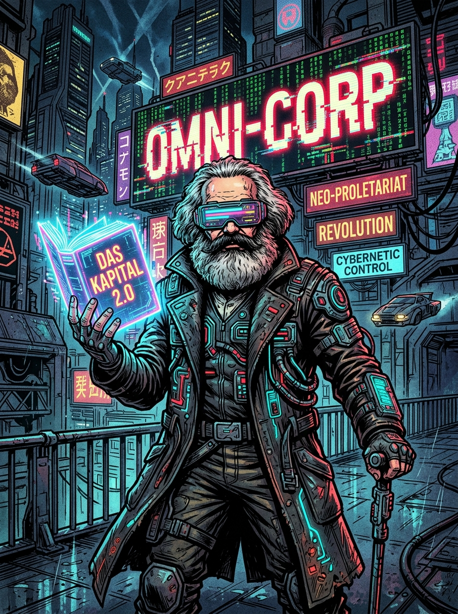

Đồ Án Sản Phẩm Sáng Tạo Truyện Tranh AR Học phần: Kinh tế chính trị Mác - Lênin (MLN122)

ĐANG QUÉT MỤC TIÊU...
HƯỚNG CAMERA VÀO TRANH CYBER-MARX
⚡ ĐÃ KHÓA MỤC TIÊU: DAS KAPITAL 2.0 (OMNI-CORP DETECTED)
🖼️ TRANH MẪU ĐỂ QUÉT THỬ NGHIỆM
Để test camera ngay lập tức, bạn có thể dùng điện thoại soi thẳng vào bức tranh này trên màn hình máy tính (hoặc in ra giấy):
💡 Nét vẽ vi mạch, kính visor neon và chữ "OMNI-CORP" đã được AI trích xuất điểm nhận diện (Feature Points) đạt chuẩn 5 sao!
📊 GIÁ TRỊ THẶNG DƯ TRONG KỶ NGUYÊN SỐ
1. Bản chất công thức: \(W = c + v + m\)
\(c\) (Tư bản bất biến): Server đám mây, hệ thống máy chủ AI, chip bán dẫn, thuật toán nền tảng.
\(v\) (Tư bản khả biến): Tiền lương/chiết khấu chi trả cho lập trình viên, shipper, tài xế công nghệ.
\(m\) (Giá trị thặng dư): Kho dữ liệu lớn (Big Data) và thặng dư hành vi người dùng bị các tập đoàn công nghệ chiếm đoạt không công!
2. Biểu hiện mới của bóc lột:
Trong nền kinh tế nền tảng (Platform Economy), người lao động bị giám sát 24/7 bởi "Ông chủ thuật toán" (Algorithmic Management), tạo ra siêu ngạch lợi nhuận khổng lồ cho tập đoàn độc quyền.
🏢 ĐỘC QUYỀN HẠ TẦNG VÀ DỮ LIỆU LỚN
Theo Lênin (Chương 4): Cạnh tranh tự do tất yếu dẫn tới tích tụ và tập trung sản xuất, sinh ra Độc quyền.
Biểu hiện của tập đoàn Omni-Corp:
Độc quyền mạng lưới (Network Effect): Một khi siêu ứng dụng chiếm đa số người dùng, các đối thủ mới không thể cạnh tranh bình đẳng.
Bóp nghẹt đối thủ: Sẵn sàng mua đứt (Acquisition) hoặc sao chép/đánh cắp tính năng của các ứng dụng nguồn mở.
Liên minh với Nhà nước tư sản: Tận dụng luật bản quyền và an ninh mạng để bảo hộ trật tự độc quyền.